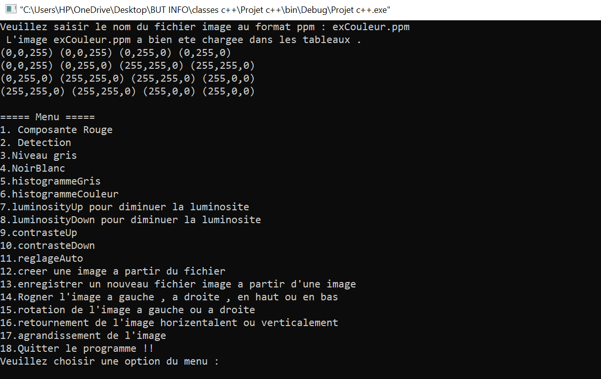
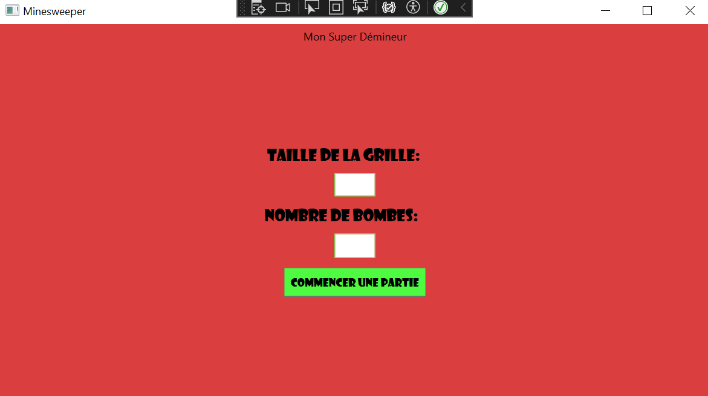
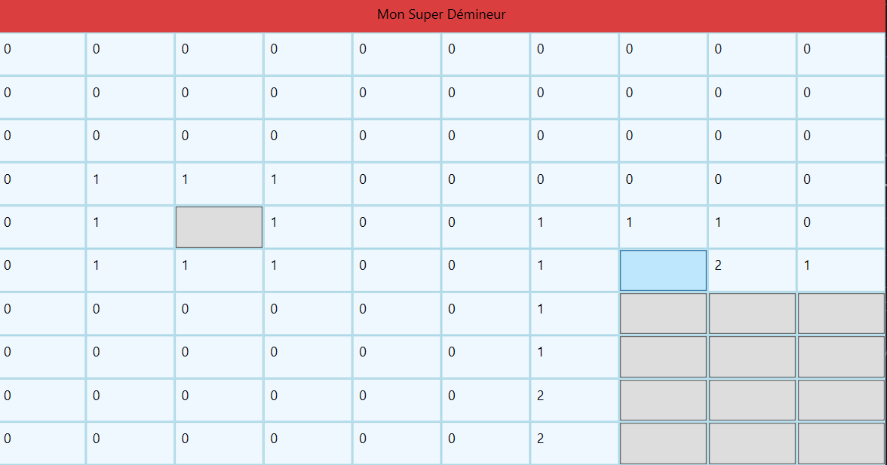
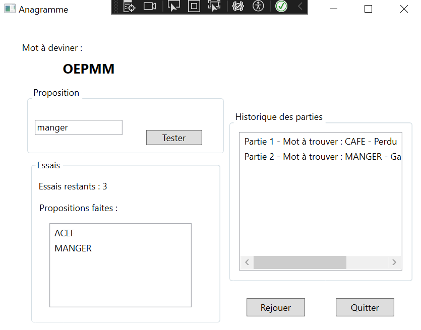
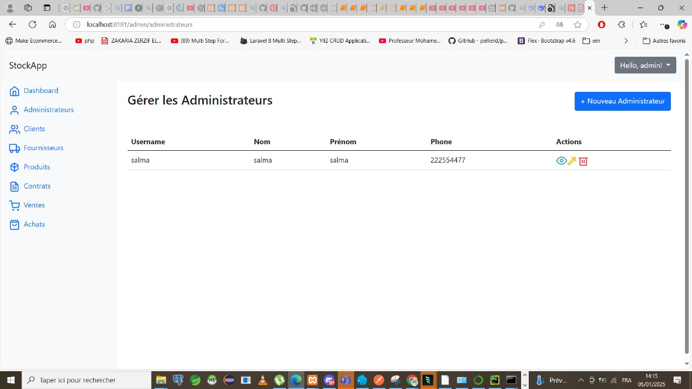

À propos de moi
Actuellement en deuxième année de Licence Informatique (L2) et titulaire d’un DUT Informatique obtenu au Maroc, je souhaite intégrer la troisième année de Licence Informatique à l’Université de Saint-Denis. Mon parcours académique m’a permis d’acquérir des compétences solides en développement logiciel, ainsi qu’en conception et gestion de bases de données. Passionnée par l’ingénierie logicielle et le développement, j’ai également renforcé mes connaissances en mathématiques, tant sur le plan théorique que pratique, ce qui me permet d’aborder avec rigueur les problématiques algorithmiques et d’optimiser mes solutions informatiques. Ce portfolio met en avant mes réalisations et mon engagement dans le domaine, dans le but de candidater à votre formation Licence 3 Informatique.
Formation
Université d'Avignon -2025
Ecole Superieure de Technologie Université Mohammed Premier Oujda, Maroc (2022-2024)
Baccalauréat Sciences Mathematiques et Physiques - 2021
Licence 2 Informatique
DUT Informatique - Parcours Développement d'applications
Obtenu mention très bien
Mes compétences
Langages


Outils


Frameworks


Systèmes d'exploitation
Mes projets
Site Portfolio
Le site sur lequel vous naviguez actuellement. Réalisation d’un site web portfolio afin de mettre en pratique les différentes compétences en HTML et en CSS acquises en cours. Tous mes projets y sont présentés plus en détail.
Logiciel d'édition d'images
Programme permettant d’éditer et d’enregistrer des images au format ppm (ascii). Utilisation de classes pour stocker les valeurs de Rouge, Vert et Bleu de l’image dans des vecteurs et y effectuer des modifications. Après la saisie du nom de l’image à modifier et enregistrer par l’utilisateur, plusieurs fonctionnalités sont disponibles, comme par exemple augmenter/diminuer la luminosité de l’image, rognage et rotation, retournement horizontal/vertical, noir et blanc...

Le projet est consultable ici : https://github.com/SalmaSpace/Projet-Image-C-.git
Demineur :
Programmation du jeu classique du Demineur en c#
 
Le projet est consultable ici : https://github.com/SalmaSpace/Jeu-Demineur-CSharp.git
Anagramme :
Réalisation d'un jeu où il faut deviner un anagramme affiché à l'écran en C# WPF. L'utilisateur peut jouer une partie d'Anagramme, où il faut retrouver le mot qui se cache derrière le mot mélangé. Il peut faire des propositions de réponses, consulter/visualiser les propositions précédentes, et il a un nombre limité de tentatives pour une partie. Si le mot est trouvé, la partie est gagnée, si le mot n'est pas trouvé à l'issu des tentatives, la partie est perdue, cela est affiché par une boîte de dialogue. L'utilisateur peut relancer une nouvelle partie à tout moment, la partie en cours est considérée perdue. A la fin d'une partie Gagnée ou Perdue, on demande à l'utilisateur s'il souhaite refaire une partie, l'historique des parties est conservé.

Le projet est consultable ici : https://github.com/SalmaSpace/Anagramme-CSharp-.git
Gestion Notes Inscriptions :
Le projet "GestionNotesInscriptions" est une application web dynamique conçue pour simplifier l'administration des inscriptions et la gestion des notes au sein d'une institution éducative. Ce système permet aux administrateurs, enseignants, et étudiants de gérer efficacement les inscriptions, les informations personnelles, et le suivi académique grâce à une interface intuitive. Les fonctionnalités clés incluent la gestion des utilisateurs, l'affichage et la modification des notes, ainsi que la communication entre les différents acteurs de l'écosystème éducatif, assurant une expérience utilisateur fluide et sécurisée.
Le projet est consultable ici : https://github.com/SalmaSpace/GestionNotesInscriptions.git
Gestion Matériel :
Le projet "GestionMatériel" est une plateforme web robuste destinée à optimiser la gestion du matériel au sein des organisations. L'application offre une interface claire pour l'ajout, la modification, et le suivi du matériel disponible ou emprunté. Les utilisateurs peuvent facilement rechercher des articles spécifiques, consulter l'état des disponibilités, et gérer les emprunts à travers une série de fonctionnalités interactives. Adapté pour les besoins des entreprises et des institutions éducatives, ce système favorise une gestion efficace et précise des ressources matérielles, renforçant ainsi les processus opérationnels.
Le projet est consultable ici : https://github.com/SalmaSpace/Application-Gestion-Mat-riaux-M-dicaux.git
Gestion Stock Fournisseurs :
Le projet "Gestion Stock Fournisseurs" est un système de gestion de stock sophistiqué, conçu pour automatiser et optimiser le suivi des inventaires et la relation avec les fournisseurs. Développé avec Maven pour garantir une intégration et une gestion efficaces des dépendances, cette application facilite la surveillance des niveaux de stock, la commande de nouveaux produits, et la gestion des interactions avec les fournisseurs. L'architecture du projet est structurée pour une extension et une maintenance aisées, ce qui le rend particulièrement adapté aux besoins des entreprises souhaitant améliorer leur chaîne d'approvisionnement et leur logistique.

Le projet est consultable ici : https://github.com/SalmaSpace/Gestion-Stock-Fournisseurs.git